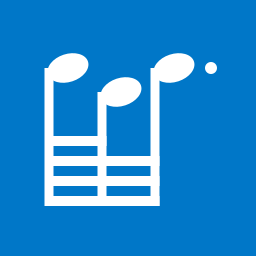
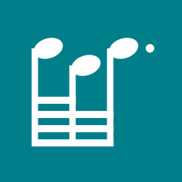
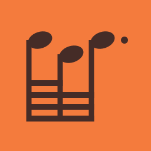
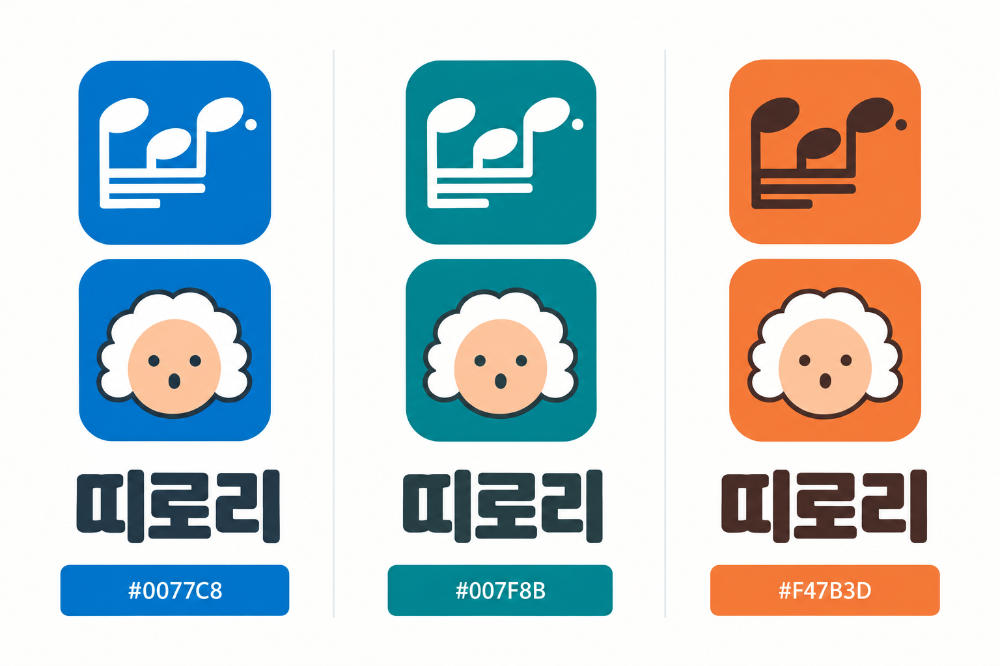

색은 선명하게.
표정은 그대로 귀엽게.
대표색은 선명한 파랑 #0077C8. 사용자의 선택 위임에 따라 바흐의 살구색 얼굴과 흰 가발이 또렷하게 보이는 파랑을 골랐다. 좋아한 하늘색 #A8D4E5는 보조 바탕으로 이어간다. 청록·귤색은 비교 기록이다.
색의 의미는 브랜드가 앞으로 쌓을 약속이다. 파랑 자체가 음악을 뜻하지는 않는다. 대표색을 넓은 면과 아이콘에 반복하고 음형·바흐·타이포를 함께 써서 인지성을 만든다.
64분 / 64분 / 점32분
맨 위 짧은 연결선은 앞의 두 음만 잇는다. 아래 세 연결선은 세 음 모두를 잇고, 오른쪽 기둥도 맨 아래까지 내려간다. 마지막 음표머리 오른쪽에는 점을 둔다. 화음·오선·장식음은 생략했다.
24·32px에서는 간격과 점 크기를 조정한 별도 도형을 쓴다. 점의 작은 크기와 네 연결선의 밀도는 최종 아이콘 전 기기에서 확인할 항목이다. 이 SVG는 기보 요소를 바탕으로 한 로고 구조 연구다.
선명한 파랑
#0077C8
열린 무대와 다음 시도. 사용자가 좋아한 하늘색을 더 선명하게 만든 연속적인 선택.
다른 소프트웨어에도 익숙한 색이라 음형·바흐·타이포의 일관성이 필요하다.
#0077C8#A8D4E5#203849#F7FBFE#F3BB9B버튼·아이콘 글자 대비 4.7:1 · 본문 11.71:1. 선언한 두 색의 계산이며 전체 접근성 검수는 아니다.
맑은 청록
#007F8B
만들기와 듣기가 서로 이어지는 공간이라는 서사를 붙일 수 있다. 파랑보다 차이를 주는 대안.
차분한 생산성 도구의 인상이 강해질 수 있다.
#007F8B#B8E2DF#203C40#F5FBFA#F3BB9B버튼·아이콘 글자 대비 4.76:1 · 본문 11.26:1. 선언한 두 색의 계산이며 전체 접근성 검수는 아니다.
선명한 귤색
#F47B3D
시작의 신호와 장난스러운 감탄. 띠로리의 익살을 색으로도 앞세우는 방향.
파랑을 좋아한 현재 취향에서 가장 멀고, 넓은 편집 화면에 과하게 쓰면 피로하다.
#F47B3D#FAD8BA#452C27#FFFAF3#A8D4E5버튼·아이콘 글자 대비 4.72:1 · 본문 12.31:1. 선언한 두 색의 계산이며 전체 접근성 검수는 아니다.
같은 색, 두 아이콘
음형과 놀란 바흐를 같은 대표색 위에 비교한다. 아래 음형은 맨 위 짧은 선 + 아래 세 줄 전체 연결 + 끝까지 내린 기둥 + 마지막 점을 갖춘 SVG다.
선명한 파랑
#0077C8
맑은 청록
#007F8B선명한 귤색
#F47B3D동일한 바흐 PNG를 사용해 색만 비교한다. 캐릭터는 image_gen, 음형 구조는 SVG. 최종 앱별 배정은 미정.
AI 색·캐릭터 보드 기록
음형 / 놀란 바흐
같은 대표색에 두 아이콘을 비교한다. 바흐는 흰 가발과 O자 입을 유지한다. 어느 앱에 어느 심벌을 배정할지는 아직 정하지 않았다.

생성 보드는 색·캐릭터 인상 비교용. 위 SVG가 음가 구조의 기준이며, 생성 이미지의 음표와 글자는 편차가 있을 수 있다.